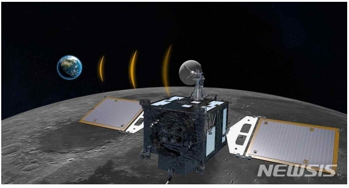
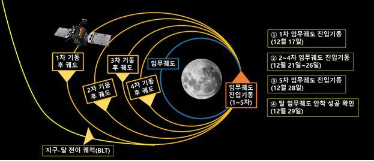
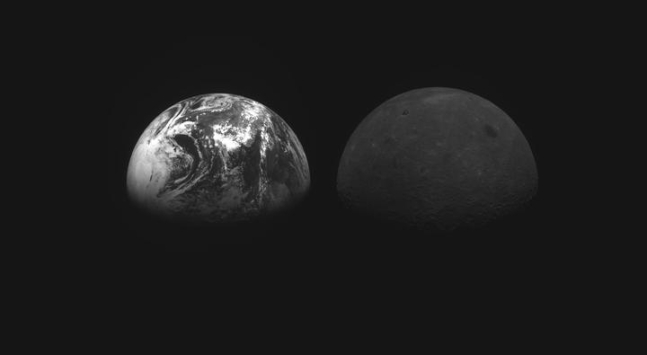

다누리, 17일 새벽 2시45분 1차 달 임무궤도 진입기동 수행
시속 8000㎞ 다누리를 시속 3600㎞ 달 궤도에 넣어야
그간 4차례 궤적수정기동도 무사 성공…달 진입도 '순항' 기대

한국의 첫 달 궤도선 '다누리' 상상도. (사진=한국항공우주연구원)
[서울=뉴시스]윤현성 기자 = 우리나라의 첫 달 궤도선 '다누리'가 지난 8월
발사된 이후 4개월 만에 최종 목적지인 달에 도착한다. 이제 다누리는 달
영향권에 최종 진입하기 위해 가장 어려운 임무 중 하나를 수행하게 된다.
총알보다 빠른 다누리를 총알과 같은 속도의 달에 정확하게 맞춰야 한다.
16일 과학계에 따르면 다누리는 달에서 약 108㎞까지 가까워지는 다음날
새벽 2시45분 달 임무궤도 진입을 위한 1차 달 임무궤도 진입기동(LOI)을
진행하게 된다. LOI는 다누리의 임무궤도인 달 상공 100㎞ 원궤도에
안착시키기 위해 다누리에 탑재된 추력기를 통해 속도를 줄이는 기동이다.
다누리는 지난 8월5일 발사된 이후 총 594만㎞를 비행했는데, 그 과정에서
속도가 시속 8000㎞까지 가속된 상태다. 한국항공우주연구원은 오는 17일
진행될 1차 진입기동이 다누리가 달의 중력에 안정적으로 붙잡혀 달을
지나치지 않도록 하는 가장 중요한 과정이라고 강조했다.
1차 진입기동에서 다누리는 약 13분간 추력기를 가동해 시속 8000㎞에서
시속 7500㎞까지 속도를 줄이고, 총알의 속도인 시속 3600㎞로 이동 중인
달 궤도에 진입하는 것을 목표로 한다. 이같은 1차 진입기동의 결과는
데이터 분석 과정을 거쳐 오는 19일 도출될 예정이다.
다누리는 달 궤도 1차 진입기동을 진행한 이후에도 21, 23, 26, 28일까지
총 4차례의 진입기동을 추가로 진행하게 된다. 이처럼 총 5차례의 달궤도
진입기동 이후 데이터 분석까지 마치면 29일 중 달 궤도 안착 성공 여부를
최종 확인할 수 있다.

다누리의 달 임무궤도 진입기동. (사진=과학기술정보통신부 제공) *재판매 및
DB 금지
이처럼 달 궤도 진입기동은 굉장한 고난이도의 작업이지만, 이 또한 임무
성공 가능성을 최대한 높이기 위한 항우연의 계산·분석의 산물이다.
다누리가 달까지 4개월이 넘는 긴 시간을 소요한 것은 'WSB(BLT) 궤적'을
사용했기 때문이다. BLT궤적은 달 방향이 아닌 태양 쪽으로 우주선을
발사하는 방식이다.
지구와 태양 사이에는 중력이 평형을 이루는 '라그랑주 포인트
L1'(지구에서 150만㎞)이라는 지점이 있는데, 이곳에서는 약한 힘으로도
궤적을 크게 틀 수 있다. 이 지점에서 태양의 중력을 이용해 궤적을 크게
변화시킴으로써 달에 도착할 때 보다 효과적으로 감속을 진행할 수 있다.
당초 항우연은 다누리를 달까지 약 1~2개월이 소요되는 '위상전이궤적'
방식을 사용하려 했으나 준비 과정에서 다누리 설계 중량이 늘어나면서
불가피하게 속도가 더 느리고 연료를 더 적게 소모하는 BLT 궤적으로
방식을 바꾸게 됐다. 다누리의 속도가 더 느린 BLT 궤적을 선택했음에도
이처럼 고난이도의 진입 기동 절차가 남은 셈이다.

지난달 28일 다누리가 촬영한 지구(왼쪽)와 달의 모습.
(사진=과학기술정보통신부 제공) *재판매 및 DB 금지
그럼에도 다누리의 기동에 대해서는 성공을 기대할 수 있을 것으로 보인다.
이미 다누리는 앞서 진행된 수차례의 궤적수정기동을 성공적으로 끝마쳤고,
특별한 변수 없이 계획대로 순항을 이어왔다.
그간 다누리는 총 4차례의 궤적수정기동을 수행했는데, 당초 항우연이
예상했던 궤적수정기동 횟수는 최대 9번이었다. 다누리가 계획대로 비행을
이어가며 궤적 수정이 예상보다 훨씬 적어졌다.
특히 다누리는 지난 2일 진행된 최고 난이도의 2차 궤적수정기동도 무사히
마치기도 했다. 2차 기동은 라그랑주 포인트 L1에서 비행 방향을 태양에서
달 쪽으로 전환하는 것이다. 지상국과의 교신 거리가 가장 멀어진 상태인
만큼 궤도 오차가 커지면 태양 중력에 빨려 들어갈 수 있는데, 이처럼 가장
중요하고 고난도의 기동도 항우연의 예상과 거의 똑같이 진행됐다.
다누리가 달 100㎞ 상공의 임무궤도에 안착하면 내년부터 하루 12회
공전하며 ▲달 표면 촬영을 통한 달 착륙선 착륙 후보지 탐색 ▲달 표토입자
크기 분석 및 티타늄 분석 지도 작성 ▲달 자기장 측정을 통한 달 생성 원인
연구 ▲달 표면 자원 지도 및 달 우주망사선 환경지도 작성 ▲우주인터넷
기술 시험 등의 임무를 1년간(2023년 1~12월) 수행하게 된다.
다누리가 임무에 성공하면 우리나라도 소련(러시아), 미국, 중국, 유럽,
일본, 인도 등에 이어 세계 7번째 달 탐사국에 이름을 올리며 우주 탐사
역사에 족적을 남길 수 있을 것으로 기대된다.